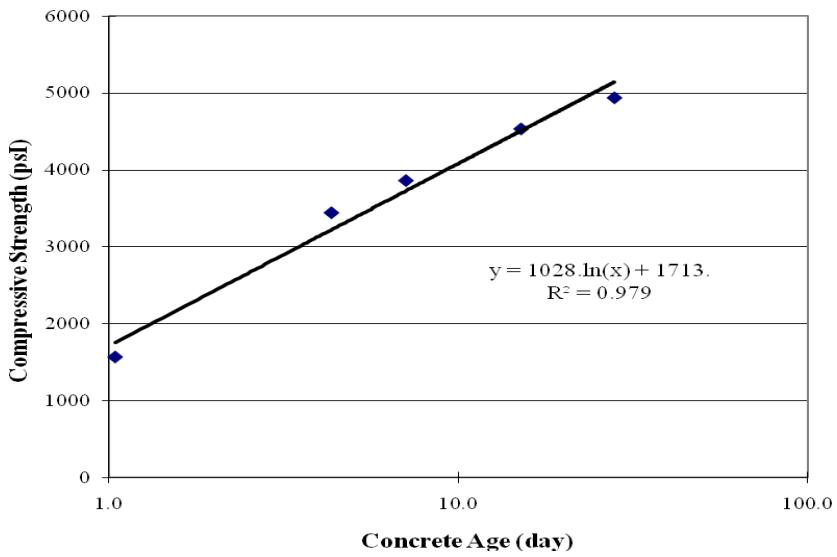

Hydration, Heat & Maturity
Hydration is an exothermic chemical reaction between cementitious materials and water that releases thermal energy, driving the transition of a fluid mixture into a solid matrix with developing mechanical strength. The rate and extent of this reaction are governed by temperature, mix composition, and moisture availability, resulting in a characteristic heat evolution curve that reflects the progress of the chemical processes [1] [2] [3]. Because reaction kinetics are temperature-dependent, the cumulative thermal history over time serves as a proxy for the degree of hydration and can be integrated into a maturity index to predict early-age strength development [4] [2] [5]. Monitoring this thermal evolution through calorimetric techniques allows for the characterization of hydration kinetics and the assessment of potential risks such as thermal cracking or excessive shrinkage due to internal temperature gradients [6] [7] [8].
This overview of Hydration, Heat & Maturity from CP Tech Center reports also covers the following subtopics: Calorimetry, Cement Hydration, and Maturity Method.
Hydration, Heat & Maturity addresses the thermal evolution of concrete and its direct impact on structural performance. Cement Hydration serves as the fundamental exothermic chemical mechanism that drives the thermal dynamics and strength development central to this category. Calorimetry quantifies the exothermic heat flow of cement hydration to characterize mix performance and predict setting behavior. The Maturity Method quantifies the cumulative heat history generated by cement hydration to estimate early-age strength gain.
Sources (19)
Sub-concepts (3)
Key findings
- Incorporating ground-granulated blast-furnace slag consistently lowered the peak temperature of the hydration heat curve while shifting the maximum to later times, thereby extending initial and final set periods [7] [5].
- Simple isothermal calorimetry reliably differentiated heat evolution among different cement types and curing regimes, enabling prediction of mortar set time and early-age strength up to two days [1] [2].
- Semi-adiabatic calorimetry provided more accurate pavement temperature forecasts in modeling tools compared with isothermal tests, though its results were highly sensitive to placement and ambient temperatures [2] [9].
- Controlled surface moisture retention via high-efficiency curing compounds applied early after casting significantly increased the degree of hydration, sorptivity reduction, and compressive strength under hot-weather conditions [3].
- Higher mixing energy from high-shear mixers accelerated cement hydration, causing the peak heat of hydration to occur earlier and increasing early-age maturity and three-day compressive strength by approximately six percent [10].
- Self-consolidating concrete generated heat evolution comparable to or lower than conventional mixes while achieving higher maturity indices at equivalent ages due to rapid strength development from supplementary cementitious materials [9].
- Ultrasonic pulse velocity reliably detected the moment of initial set, allowing for a consistent prediction of the sawing window based on a fixed time offset after setting rather than proportional intervals [11].
- Heat generated during cement hydration created non-uniform temperature gradients that drove curling and warping strains, making the cumulative thermal history a primary predictor of stress development in mechanistic-empirical design [6].
Thermal Evolution and Maturity-Based Strength Estimation
Evidence: 17 reports (14 primary)
Cement hydration is an exothermic chemical reaction between cement particles and water that releases thermal energy, producing a characteristic temperature-time curve known as the heat signature [1] [2] [7] [12] [3]. The rate of this reaction and the resulting strength development are governed by temperature, with higher temperatures accelerating hydration while lower temperatures retard it [13] [2] [11] [3]. The maturity method integrates this temperature history and elapsed curing time into a single index to predict early-age strength, based on the principle that equivalent thermal exposure leads to comparable mechanical properties [4] [2] [7] [3]. Monitoring this thermal evolution allows engineers to assess reaction progress and manage trade-offs between accelerated strength gain and risks such as thermal cracking or excessive shrinkage [2] [6] [5] [3] [8].
The following figure illustrates how varying curing temperatures influence the heat evolution profile for Type I cement.
 Effect of curing temperature on heat of hydration (Type I cement) [1]
Effect of curing temperature on heat of hydration (Type I cement) [1]
The data demonstrates that higher curing temperatures accelerate the hydration process, shifting the main heat evolution peak to an earlier time while increasing its magnitude.
Research problem — The industry lacks integrated, cost-effective tools and standardized field-compatible procedures to continuously monitor early-age heat evolution and moisture conditions, which are essential for accurately predicting maturity profiles and preventing thermal or shrinkage cracking [13] [1] [2] [14] [11]. Existing maturity-based strength estimation methods often fail to account for the complex interactions between curing effectiveness, supplementary cementitious materials, and mixing energy, leading to unreliable predictions of early-age strength and set times [10] [3] [15] [9]. Uncontrolled heat release during cement hydration creates steep thermal gradients that induce curling stresses and plastic shrinkage cracking, compromising the dimensional stability and long-term durability of pavement structures [6] [16] [7] [5] [8].
The following figure illustrates how different cement types influence this critical heat evolution process.
 Effect of cement type on heat of hydration [1]
Effect of cement type on heat of hydration [1]
The figure displays the rate of heat generation in mW/g versus time in hours for three different cement types: Type I (blue), Type III (magenta), and ISM (brown). Isothermal Calorimeter Test results show that the rate of heat generation varies significantly based on the specific chemical composition and physical properties, such as fineness. Finely ground Type III cement exhibits a much higher rate of heat evolution than Type I cement, while the addition of slag in ISM blended cement decreases the early hydration rate.
State of the art — The field has shifted from isolated laboratory testing to an integrated, performance-based framework that couples continuous thermal monitoring with maturity models to predict early-age strength and cracking risk in real time [14] [5]. Modern practice relies on a multi-tiered calorimetric strategy using semi-adiabatic and isothermal devices to generate heat-of-hydration signatures that feed mechanistic-empirical software for precise mix-design optimization [1] [2]. Current consensus emphasizes managing hydration heat through material selection and internal curing rather than external temperature control, utilizing supplementary cementitious materials and superabsorbent polymers to moderate peak temperatures and sustain reaction progress [16] [12].
The following figure illustrates the exponential equations used to approximate the relationship between P and Q.
 Exponential equations to approximate P vs. Q [2]
Exponential equations to approximate P vs. Q [2]
The figure displays a plot of measured heat evolution rate (P) versus calculated cumulative heat (Q), showing data curves for four different isothermal temperatures. Exponential regression equations are fitted to the experimental points, allowing the prediction of hydration trends at longer time periods beyond the test range. This analysis characterizes cement hydration kinetics by modeling the relationship between heat evolution rate and cumulative thermal energy, which serves as a proxy for the degree of reaction.
Findings from the reports
- Isothermal calorimetry provided repeatable heat-evolution data that correlated strongly with ASTM C403 set times and enabled early-age strength prediction when coupled with maturity models [1] [2].
- Incorporating ground-granulated blast-furnace slag lowered peak hydration heat and delayed set times, whereas silica fume increased the heat signature due to high pozzolanic activity [7] [5].
- Semi-adiabatic calorimetry tracked field pavement temperatures more accurately than isothermal data but was highly sensitive to placement temperature variations [2].
- Higher mixing energy accelerated cement hydration, advancing the time of peak heat release and increasing early-age maturity indices compared with conventional mixing methods [10].
- Self-consolidating concrete achieved higher early-age strength with lower or comparable heat evolution due to its low water-to-binder ratio, despite a delayed initial set [9].
- Curing compounds increased surface moisture and the degree of hydration, but maturity indices proved insufficient for distinguishing between different curing treatments or efficiencies [3].
- Super-absorbent polymers acted as internal water reservoirs that raised the primary heat-evolution peak and cumulative heat release, thereby boosting early-age maturity while reducing autogenous shrinkage [12].
- Wireless RFID temperature sensors reliably recorded concrete temperatures to calculate maturity indices, whereas MEMS sensors suffered from poor long-term survivability in the alkaline environment [4].
- Ultrasonic pulse velocity measurements reliably detected the initial set of pavement concrete and established a consistent lag time before early-entry sawing operations began [11].
- Rapid-set cement systems generated exceptionally high heat release rates within hours, enabling fast strength gain but creating significant thermal cracking risks that required active mitigation [8].
Novelty & rigor — Research has developed unified, field-deployable frameworks that integrate rapid calorimetric heat-evolution measurements with real-time maturity monitoring to provide continuous feedback on early-age strength and thermal cracking risk during construction [14]. Novel methodologies have emerged that link mix-design variables—such as ternary cement chemistry, high-shear mixing energy, or superabsorbent polymer internal curing—to predictive statistical models of heat signatures and maturity indices, enabling pre-construction screening without reliance on empirical trial-and-error [10] [5] [12]. The field is advancing toward standardized, low-cost calorimetry protocols and wireless sensor networks that allow for the reproducible translation of thermal data into actionable maturity predictions across diverse environmental conditions and material compositions [1] [4] [2].
The following figure illustrates isothermal calorimetry results for US 71 (Atlantic, IA) field concrete samples.
 Isothermal calorimetry results for US 71 (Atlantic, IA) field concrete samples [2]
Isothermal calorimetry results for US 71 (Atlantic, IA) field concrete samples [2]
The figure displays the rate of heat evolution over time for four distinct dates, illustrating the exothermic chemical reaction between cementitious materials and water. The curves show a rapid increase in thermal energy release followed by a peak and subsequent decline, reflecting the kinetics of hydration that drive the transition from fluid to solid matrix.
Reported values
| Parameter | Value | Context | Source |
|---|---|---|---|
| final set time | 3.0 hours | with water reducer added | [1] |
| final set time | 8.4 hours | without water reducer | [1] |
| measurement interval | 30 minutes | temperature readings | [4] |
| sensor failure rate immediately after paving | 19% | sensors after concrete paving | [4] |
| final set time difference | 0.4 hours | AdiaCal vs ASTM test | [2] |
| initial set time difference | 0.5 hours | AdiaCal vs ASTM test | [2] |
| compressive strength | greater than 3,500 psi | cold weather concrete operations at three days and 50°F | [7] |
| compressive strength | 70% | mixes within 7 days | [17] |
| compressive strength improvement | 10% | two-stage mixing at 28 days | [10] |
| compressive strength (maturity threshold) | < 2,500 psi | hot weather concrete operations at three days | [5] |
| lag time between initial set and sawing | 220 minutes | once initial set is observed | [11] |
| degree of cement hydration | 41.5% | reference specimen (Case 1) | [3] |
| unhydrated cement content | 7-13% | concrete in the studied Michigan pavements | [15] |
| compressive strength | 4,151 psi | LMC-VE paste at 12 hours in the laboratory | [8] |
| final set time advance | 30 minutes earlier | SFSCC final set compared to conventional concrete | [9] |
34 more distinct values omitted here; the full span-verified set is in the quantities sidecar.
The following figure illustrates the maturity-strength relationship for HW 95 samples from Alma Center, WI.

Maturity-strength relationship for HW 95 (Alma Center, WI) samples [2]The figure plots compressive strength against concrete age on a semi-logarithmic scale, showing data points that follow an upward trend.
Across the reviewed reports, thermal evolution and maturity-based strength estimation are fundamentally governed by a complex interplay of mix composition, curing temperature, and physical processing energy, which collectively dictate the rate and magnitude of early-age heat release. While compositional adjustments such as incorporating slag or silica fume can effectively mitigate peak thermal rise and delay set times to reduce cracking risk, these benefits are often counterbalanced by slower early-age strength development unless offset by higher mixing energy or lower water-to-binder ratios. Calorimetric monitoring serves as a critical bridge between hydration chemistry and maturity prediction, with isothermal methods providing high repeatability for quality control while semi-adiabatic tests offer superior sensitivity to field placement temperatures for thermal-stress forecasting. Despite the strong correlation between heat evolution and early-age strength in many systems, maturity indices alone may be insufficient to capture nuanced microstructural changes or curing effectiveness, necessitating combined analytical approaches that integrate thermal data with moisture and sorptivity measurements. [1] [4] [2] [7] [14] [10] [5] [3] [9]
The following figure illustrates how variations in the water-to-cement ratio directly influence the rate and magnitude of heat release during hydration.
 Effect of water-to-cement ratio on heat of hydration [1]
Effect of water-to-cement ratio on heat of hydration [1]
The figure displays the rate of heat evolution over time for mortar samples with varying water-to-cement ratios, illustrating how mix composition influences early-age thermal release. As the w/c ratio increases, the peak value is postponed and the initial rate of heat evolution before the peak decreases.
Implications — Practitioners should integrate calorimetric monitoring with maturity models to predict thermal cracking risk and strength development, moving away from generic age-based acceptance criteria toward data-driven mix design that accounts for specific heat-evolution profiles [1] [5]. Design specifications must treat temperature control as a cross-cutting variable, balancing the benefits of accelerated maturity against durability trade-offs by managing thermal gradients through mix chemistry and curing practices rather than relying solely on strength indices [6] [10] [8]. Maturity-based scheduling requires robust, field-deployable sensing systems that can withstand harsh concrete environments to ensure continuous data capture for accurate timing of form removal and joint sawing [4] [11].
Limitations — The maturity method lacks the resolution to distinguish between different curing compounds or timing schedules, limiting its utility for evaluating specific heat-of-hydration effects [3]. Predictive models are restricted to the specific ranges of cementitious materials examined and omit interaction effects, cautioning against extrapolation beyond those bounds [5]. Laboratory-derived coefficients often fail to reflect field variability in mix designs, coverages, and environmental temperatures, necessitating extensive validation before reliance on single metrics for quality control [2] [3].
Mixture Proportioning and Hydration-Driven Performance Trade-offs
Evidence: 3 reports (2 primary)
Research problem — It remains unclear whether low water-to-binder or high-density concrete can reliably withstand cyclic freezing and thawing without air-entraining admixtures, given the theoretical assumption that reduced permeability prevents saturation [18]. The research seeks to determine if low permeability alone is sufficient for freeze-thaw durability or if it must be combined with high strength to eliminate the need for air entrainment, which typically reduces concrete strength [18].
Findings from the reports
- Demonstrated that concrete requires a paste volume approximately 1.25 to 1.5 times the aggregate void volume to achieve workability, below which water-reducing admixtures remain ineffective [16].
- Revealed that lowering the water-to-cementitious ratio accelerates setting time when cement content is high due to increased particle proximity and faster hydration product formation [16].
- Showed that exceeding a critical paste threshold (approximately twice the aggregate void volume) fails to increase compressive strength while simultaneously worsening chloride penetrability and air permeability [16].
- Established that Type K self-consolidating concrete releases a heat of hydration essentially identical to ordinary Portland cement, thereby avoiding unique thermal-stress concerns in large members [19].
- Observed that the distinctive hydration pathway of Type K SCC produces colloidal ettringite that adsorbs water and generates swelling pressure, leading to substantial volume change under restraint [19].
- Indicated that the compressive stresses resulting from restrained expansion in Type K SCC lower permeability and improve durability without disrupting conventional maturity-based strength predictions [19].
Across the reviewed reports, mixture proportioning strategies reveal a fundamental trade-off where optimizing for workability and strength often compromises durability or introduces complex thermal-mechanical behaviors that standard maturity models may not fully capture. While increasing paste volume beyond critical thresholds yields diminishing returns on compressive strength and significantly degrades durability by enhancing chloride penetrability and air permeability, alternative binder systems like Type K SCC maintain thermal profiles compatible with conventional maturity predictions despite exhibiting distinct hydration-driven swelling pressures. [16] [19]
Implications — Designers should limit binder content to the minimum volume required to fill aggregate voids, as exceeding this threshold yields no strength benefit while increasing heat-related durability risks [16]. Specifiers must adjust maturity models and curing protocols for expansive cements to account for internal stresses from ettringite swelling and altered moisture conditions, rather than relying on standard Portland cement assumptions [19].
The figure below illustrates how compressive strength varies across different binder systems based on the ratio of paste volume to void volume.
 Compressive strengths for different binder systems at 28 days as a function of Vp/Vvoid [16]
Compressive strengths for different binder systems at 28 days as a function of Vp/Vvoid [16]
The figure plots compressive strength against the ratio of paste volume to void volume, showing that strength increases with this ratio up to an optimal point before plateauing or declining. This relationship demonstrates how binder content affects cement efficiency and mechanical properties, which is governed by the hydration process.
Limitations — Performance trends derived from specific aggregate gradations may not generalize to other aggregate types or shapes, limiting the applicability of mixture proportioning guidelines [16]. Analytical methods relying on unrealistic particle assumptions can distort the relationship between paste volume and coating thickness in low-paste mixes [16]. The trade-off between shrinkage mitigation through expansion and the risk of excessive deformation in large members remains a critical design constraint when managing hydration-driven volume changes [19].
Related concepts
In this hierarchy
- Parent: Concrete Materials & Mixtures
- Child: Calorimetry
- Child: Cement Hydration
- Child: Maturity Method
Related by shared evidence
- Cement Hydration — shares 20 reports
- Concrete Materials & Mixtures — shares 17 reports
- Supplementary Cementitious Materials — shares 17 reports
- Concrete Curing — shares 16 reports
- CP Tech Center Reports — shares 16 reports
- Fly Ash — shares 15 reports
- Air Entraining Agent — shares 14 reports
- Drying Shrinkage — shares 13 reports
Similar topics
- Cement Hydration
- Heat of Hydration
- Maturity Method
- Calorimetry
- Heat Signature
- Degree of Hydration
- Heat Index Method
- Concrete Materials & Mixtures
References
- K. Wang, Z. Ge, J. Grove, J. M. Ruiz, R. Rasmussen, and T. Ferragut, "Simple and Rapid Test for Monitoring the Heat Evolution of Concrete Mixtures, Phase 2," Center for Transportation Research and Education, Ames, IA, 2007. [Online]. Available: https://www.intrans.iastate.edu/wp-content/uploads/2018/03/calorimeter.pdf
- K. Wang, J. M. Ruiz, J. Hu, Z. Ge, Q. Xu, J. Grove, and R. Rasmussen, "Simple and Rapid Test for Monitoring the Heat Evolution ..., Phase III," National Concrete Pavement Technology Center, Ames, IA, 2008. [Online]. Available: https://www.intrans.iastate.edu/wp-content/uploads/2018/03/CalorimeterReportPhaseIII.pdf
- K. Wang, J. K. Cable, and G. Zhi, "Improved Pavement Curing Materials and Techniques: Part 1 (Phases I and II)," Center for Transportation Research and Education (CTRE), Iowa State University, Ames, IA, Rep. TR-451, 2002. [Online]. Available: https://www.cptechcenter.org/wp-content/uploads/2018/03/curing.pdf
- H. Ceylan, L. Dong, S. Yang, Y. Jiao, S. Yavas, S. Kim, K. Gopalakrishnan, and P. Taylor, "Development of a Wireless MEMS Multifunction Sensor System and Field Demonstration of Embedded Sensors for Monitoring Concrete Pavements, Volume I," Institute for Transportation, Ames, IA, Rep. TR-637, 2016. [Online]. Available: https://prosper.intrans.iastate.edu/wp-content/uploads/2018/03/wireless_MEMS_volume_I_field_demo_w_cvr.pdf
- P. Tikalsky, V. Schaefer, K. Wang, B. Scheetz, T. Rupnow, A. St. Clair, M. Siddiqi, and S. Marquez, "Development of Performance Properties of Ternary Mixes, Phase 1," Center for Transportation Research and Education, Ames, IA, Rep. TPF-5(117), 2007. [Online]. Available: https://www.intrans.iastate.edu/research/completed/development-of-performance-properties-of-ternary-mixes-phase-1/
- H. Ceylan, S. Yang, K. Gopalakrishnan, S. Kim, P. Taylor, and A. Alhasan, "Impact of Curling and Warping on Concrete Pavement," Institute for Transportation, Ames, IA, Rep. TR-668, 2016. [Online]. Available: https://www.intrans.iastate.edu/wp-content/uploads/2018/03/curling_and_warping_impact_on_concrete_pvmt_w_cvr.pdf
- P. Taylor, P. Tikalsky, K. Wang, G. Fick, and X. Wang, "Development of Performance Properties of Ternary Mixtures: Field Demonstrations and Project Summary," National Concrete Pavement Technology Center, Ames, IA, Rep. TPF-5(117), 2012. [Online]. Available: https://www.intrans.iastate.edu/wp-content/uploads/2018/03/ternary_final_w_cvr.pdf
- K. Wang, B. M. Shankaramurthy, A. Anand, Y. Sargam, K. Freeseman, and B. Phares, "Performance Evaluation of Very Early Strength Latex-Modified Concrete (LMC-VE) Overlay," Institute for Transportation, Iowa State University, Ames, IA, Rep. TR-771, 2024. [Online]. Available: https://bec.iastate.edu/wp-content/uploads/2024/10/performance_evaluation_of_LMC-VE_overlay_w_cvr.pdf
- K. Wang, S. P. Shah, J. Grove, P. Taylor, P. Wiegand, B. Steffes, G. Lomboy, Z. Quanji, L. Gang, and N. Tregger, "Self-Consolidating Concrete—Applications for Slip-Form Paving: Phase II," National Concrete Pavement Technology Center, Ames, IA, Rep. TPF-5(098), 2011. [Online]. Available: https://www.intrans.iastate.edu/wp-content/uploads/2018/03/SCC_Phase_2_final_report-edited_wcover.pdf
- T. D. Rupnow, V. R. Schaefer, K. Wang, and B. L. Hermanson, "Improving PCC Mix Consistency and Production Rate through Two-Stage Mixing," Center for Transportation Research and Education, Ames, IA, Rep. TR-505, 2007. [Online]. Available: https://www.intrans.iastate.edu/wp-content/uploads/2018/03/two-stage-mix-1.pdf
- P. Taylor and X. Wang, "Concrete Pavement MDA: Comparison of Setting Time Measured Using Ultrasonic Wave Propagation With Saw-Cutting Times on Pavements in Iowa," National Concrete Pavement Technology Center, Ames, IA, Rep. TPF-5(205), 2014. [Online]. Available: https://www.intrans.iastate.edu/research/completed/comparison-of-setting-time-measured-using-ultrasonic-wave-propagation-with-saw-cutting-times-on-pavements-in-iowa/
- B. Zhou, P. Taylor, and K. Wang, "Superabsorbent Polymer in Concrete to Improve Durability," National Concrete Pavement Technology Center, Iowa State University, Ames, IA, Rep. TR-793, 2025. [Online]. Available: https://www.intrans.iastate.edu/wp-content/uploads/2025/04/superabsorbent_polymer_in_concrete_w_cvr.pdf
- D. Harrington, R. Rasmussen, D. Merritt, T. Cackler, and P. Taylor, "Long-Term Plan for Concrete Pavement Research and Technology—The Concrete Pavement Road Map (Second Generation): Volume II, Tracks (FHWA-HRT-11-070)," National Center for Concrete Pavement Technology, Iowa State University, Ames, IA, 2012. [Online]. Available: https://www.fhwa.dot.gov/publications/research/infrastructure/pavements/pccp/11070/11070.pdf
- J. Grove, G. Fick, T. Rupnow, and F. Bektas, "Material and Construction Optimization for Prevention of Premature Pavement Distress in PCC Pavements," National Concrete Pavement Technology Center, Ames, IA, Rep. TPF-5(066), 2008. [Online]. Available: https://www.intrans.iastate.edu/wp-content/uploads/2018/03/mco-final.pdf
- J. Grove, F. Bektas, and H. Gieselman, "Southeast Michigan Local Road Concrete Pavement Durability Study," National Concrete Pavement Technology Center, Ames, IA, 2006. [Online]. Available: https://www.cptechcenter.org/wp-content/uploads/2018/03/mi_pavement_durability.pdf
- P. Taylor, F. Bektas, E. Yurdakul, and H. Ceylan, "Optimizing Cementitious Content in Concrete Mixtures for Required Performance," National Concrete Pavement Technology Center, Ames, IA, 2012. [Online]. Available: https://www.intrans.iastate.edu/wp-content/uploads/2018/03/taylor_ocm_w_cvr2.pdf
- R. D. Hooton and D. Vassilev, "Deicer Scaling Resistance of Concrete Mixtures Containing Slag Cement, Phase 2," National Concrete Pavement Technology Center, Ames, IA, Rep. TPF-5(100), 2012. [Online]. Available: https://www.intrans.iastate.edu/research/completed/deicer-scaling-resistance-of-concrete-pavements-bridge-decks-and-other-structures-containing-slag-cement-phase-2-evaluation-of-different-laboratory-scaling-test-methods/
- K. Wang, G. Lomboy, and R. Steffes, "Investigation into Freezing-Thawing Durability of Low-Permeability Concrete with and without Air Entraining Agent," National Concrete Pavement Technology Center, Ames, IA, 2009. [Online]. Available: https://www.intrans.iastate.edu/wp-content/uploads/2018/03/low-permeability-concrete.pdf
- B. Shafei, P. Taylor, B. Phares, and M. Kazemian, "Fiber-Reinforced Concrete for Bridge Decks," Bridge Engineering Center, Iowa State University, Ames, IA, Rep. TR-767, 2021. [Online]. Available: https://www.intrans.iastate.edu/wp-content/uploads/2021/12/fiber-reinforced_concrete_in_bridge_decks_w_cvr.pdf
Feedback on this page